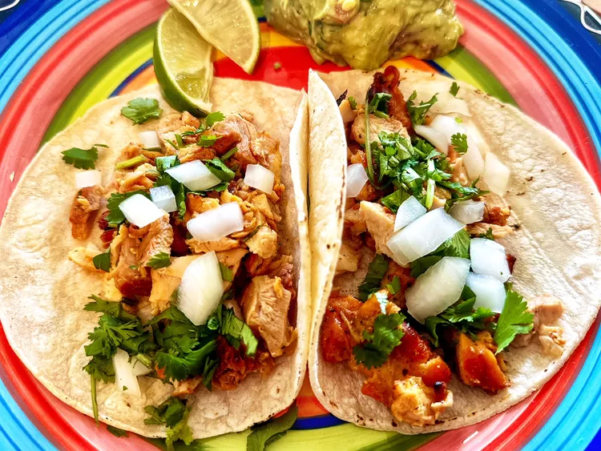

Tacos Easy Recipe

One of the best foods on planet earth and a staple in Mexican households and parties
These delicious tacos are easy to make and topped with cilantro and onions. I serve them with guacamole, salsa and fresh lime wedges on the side.
Ingredents for the Tacos
- 1 pound pollo asar
- 1 onion, diced
- 1/2 cup chopped cilantro
- 8 corn tortillas
Taco Instructions
- Preheat an outdoor grill for medium heat
- Grill chicken, turning and until no longer pink, should reach at least 165 degrees
- Heat corn tortillas in microwave about 1 minute then serve with chicken,onions,cilantro
Return to the Home Page